YOUR FARM, ONE STEP AT A TIME
Let’s grow something good.
A little guidance goes a long way. Start with what you need today.
Good farming starts
with good questions.
Plan a crop, check a leaf, or figure out when to water. We’ll help you find your next step.
Explore your growing guideYOUR FARM TOOLKIT
What can we help with?
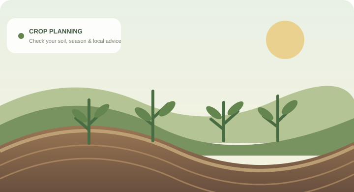
What should I grow? Find crop ideas that fit your soil, season, and water. Plan a crop Something wrong with a plant? Take a clear photo and prepare a question for an expert. Check plant health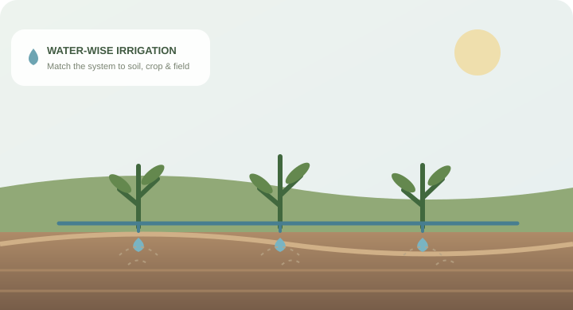
Use water more wisely Explore irrigation approaches that help reduce water waste. Build a water plan When will my crop be ready? Make a simple harvest estimate from your planting date. Check harvest timing Learn about farm technology Explore practical tools and small steps to get started. Explore the guideKisan Call Center India / Andhra Pradesh
Agriculture support in local languages · Daily, 6:00 AM–10:00 PM
TURN YOUR FARM DETAILS INTO NEXT STEPS
Your farm action plan
Tell us what is happening in your field.
Use details from your soil-test report if you have one. We’ll organize safe next steps for the crop, water, plant condition, and timing. Your location labels the plan; it does not provide location-specific forecasts or recommendations.
A THOUGHTFUL FIRST STEP
Find a crop that fits
Start with your conditions.
Enter the pH from your soil-test report to see crops whose broad preferred pH ranges include it. This is a first screening step, not a locally verified crop recommendation.
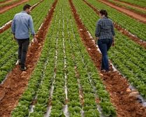
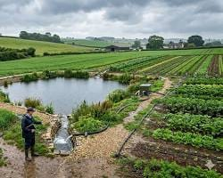
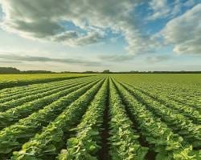
- Check local planting-season and crop-suitability advice.
- Test soil and irrigation water where services are available.
- Consider seed availability, rotation, and a reliable market.
- Follow local seed, land-use, and environmental requirements.
Rules and recommendations vary by location. Confirm them with your local agriculture office.
Crop pH ranges are approximate. A soil report’s nutrients, salinity, soil texture, climate, season, water, variety, and local rules also affect crop suitability.
FEED THE CROP, NOT JUST THE CALENDAR
Common fertilizers & when they’re used
Know what you’re applying.
Fertilizers supply plant nutrients, but the right product, amount, and timing depend on the crop, soil test, growth stage, and local recommendations.
| Fertilizer | Typical composition | Main nutrients supplied | Common timing / use |
|---|---|---|---|
| Urea | CO(NH2)2 Usually 46% N |
Nitrogen | Often applied in split doses during vegetative growth, as locally recommended. |
| Ammonium sulfate | (NH4)2SO4 Common grade: about 21% N, 24% S |
Nitrogen and sulfur | Use only when indicated by the crop plan or soil test; its acidifying effect may matter on some soils. |
| CAN Calcium ammonium nitrate |
N fertilizer blend Common grades contain about 25–27% N; check the bag |
Nitrogen; calcium content varies by product | May be used as a nitrogen source where recommended; timing and split applications depend on crop and local guidance. |
| DAP Di-ammonium phosphate |
(NH4)2HPO4 18% N, 46% P2O5 (common grade) |
Nitrogen and phosphorus | Often used as a basal fertilizer at sowing or planting, based on soil and crop recommendations. |
| SSP Single superphosphate |
Calcium phosphate + calcium sulfate Common grade: about 16% P2O5, 11% S, 19% Ca |
Phosphorus, sulfur, and calcium | Often incorporated before planting or used as a basal source; check the guaranteed analysis on the bag. |
| MOP Muriate of potash |
KCl Usually about 60% K2O equivalent |
Potassium | Timing varies by crop and soil; apply at the locally recommended stage, sometimes before planting or in splits. |
| SOP Sulfate of potash |
K2SO4 Common grade: about 50% K2O, 17–18% S |
Potassium and sulfur | Use when indicated by crop needs and soil results; compare its label and cost with other potassium sources. |
| Complex NPK 19:19:19 |
19% N – 19% P2O5 – 19% K2O | Nitrogen, phosphorus, and potassium | Balanced grade sometimes used during early vegetative growth or early flowering when recommended for the crop. |
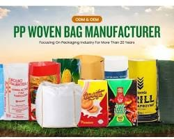
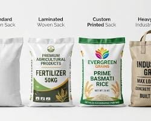
Convert a nutrient recommendation into fertilizer weight
Use the nutrient rate already recommended by your soil-test report or a qualified local advisor. This calculator does not decide which nutrient or dose your crop needs.
Calculation: recommended nutrient kg/acre ÷ nutrient fraction on the product label. The amount is a math conversion only—not a crop recommendation. Check the exact guaranteed analysis, account for nutrients supplied together, follow the label and local rules, and ask a local agronomist about timing and safe application.
N–P2O5–K2O grades are label conventions, not elemental phosphorus and potassium percentages. Formulations can vary by manufacturer and region; the product label is authoritative.
LOOK CLOSER, THEN ASK
Check on a plant
Not sure what that spot means?
Take a clear photo of the whole plant and the affected area. Choose the visible symptom to get safe first steps to check and prepare for an expert.
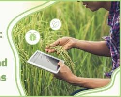
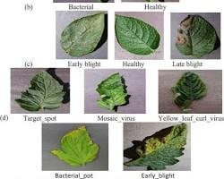
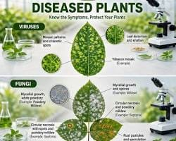
- Photograph in natural light
- Include the whole plant and a close-up
- Note when the symptoms first appeared
Your photo stays on this device; this prototype does not upload or analyze it.
EVERY DROP COUNTS
Explore a water-wise approach
Start with how your field gets water.
Different irrigation methods suit different crops, soils, budgets, and slopes. Select one to see what to ask before you invest.
- Check local water-use permits and any seasonal restrictions.
- Confirm your water source can support the planned use.
- Match the system to crop, soil, slope, and water quality.
- Plan for safe installation, filtration, maintenance, and runoff control.
Local water rights, equipment standards, and farm rules may apply. Ask your local water authority or agriculture office.
Surface drip places tubing on the soil. Check crop spacing, evaporation exposure, filtration, pressure, and whether the lines can be protected and maintained.
Actual water needs depend on crop stage, local weather, soil, and system design.IRRIGATION IN THE FIELD
See a few systems in action
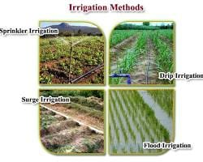
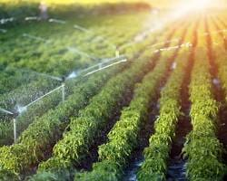
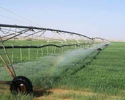
Images show examples only. System choice depends on crop, field layout, soil, water supply, maintenance, and local water-use rules.
USEFUL TOOLS, ONE STEP AT A TIME
Farm technology for beginners
Technology can help you make better-informed decisions.
Some tools are as simple as a soil test or a weather message. Others need equipment, training, good connectivity, or specialist support. Choose what solves a problem on your farm.
Soil testing
Get soil pH and nutrient information to guide crop and fertilizer discussions.
Weather forecasts & alerts
Use local forecasts to plan field work and watch for heat, heavy rain, or dry spells.
Drip & efficient irrigation
Well-designed systems can target water delivery and make scheduling easier to manage.
Digital farm records
Record planting dates, expenses, rainfall, irrigation, inputs, and harvest results.
Mechanization & shared services
Tools and machinery can reduce repetitive labor when they fit the task and farm size.
Drones, sensors & AI
Advanced tools may help survey fields or flag patterns, but their results need interpretation.
Choose one farm problem → try one affordable tool on a small area → record cost and results → ask a local advisor → expand only if it works for you.
Tool availability, costs, data coverage, permissions, and support differ by location. Ask your local agriculture office or Kisan Call Center about schemes, demonstrations, and trusted services in your area.
PLAN AHEAD, CHECK OFTEN